In this section we describe how to estimate 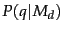. The probability of producing the query given the LM  of document
of document  using maximum likelihood estimation ( MLE ) and the unigram assumption is:
using maximum likelihood estimation ( MLE ) and the unigram assumption is:
The classic problem with using language models is one of estimation (the
symbol on the P's is used above to stress that the model is estimated): terms appear very sparsely in documents. In particular, some words will not have appeared in the document at all, but are possible words for the information need, which the user may have used in the query. If we estimate
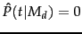 for a term missing from a document  , then we get a strict conjunctive semantics: documents will only give a query non-zero probability if all of the query terms appear in the document. Zero probabilities are clearly a problem in other uses of language models, such as when predicting the next word in a speech recognition application, because many words will be sparsely represented in the training data. It may seem rather less clear whether this is problematic in an IR application. This could be thought of as a human-computer interface issue: vector space systems have generally preferred more lenient matching, though recent web search developments have tended more in the direction of doing searches with such conjunctive semantics. Regardless of the approach here, there is a more general problem of estimation: occurring words are also badly estimated; in particular, the probability of words occurring once in the document is normally overestimated, since their one occurrence was partly by chance. The answer to this (as we saw in probtheory) is smoothing. But as people have come to understand the LM approach better, it has become apparent that the role of smoothing in this model is not only to avoid zero probabilities. The smoothing of terms actually implements major parts of the term weighting component (Exercise 12.2.3 ). It is not just that an unsmoothed model has conjunctive semantics; an unsmoothed model works badly because it lacks parts of the term weighting component.
, then we get a strict conjunctive semantics: documents will only give a query non-zero probability if all of the query terms appear in the document. Zero probabilities are clearly a problem in other uses of language models, such as when predicting the next word in a speech recognition application, because many words will be sparsely represented in the training data. It may seem rather less clear whether this is problematic in an IR application. This could be thought of as a human-computer interface issue: vector space systems have generally preferred more lenient matching, though recent web search developments have tended more in the direction of doing searches with such conjunctive semantics. Regardless of the approach here, there is a more general problem of estimation: occurring words are also badly estimated; in particular, the probability of words occurring once in the document is normally overestimated, since their one occurrence was partly by chance. The answer to this (as we saw in probtheory) is smoothing. But as people have come to understand the LM approach better, it has become apparent that the role of smoothing in this model is not only to avoid zero probabilities. The smoothing of terms actually implements major parts of the term weighting component (Exercise 12.2.3 ). It is not just that an unsmoothed model has conjunctive semantics; an unsmoothed model works badly because it lacks parts of the term weighting component.
Thus, we need to smooth probabilities in our document language models: to discount non-zero probabilities and to give some probability mass to unseen words. There's a wide space of approaches to smoothing probability distributions to deal with this problem. In Section 11.3.2 (page  ), we already discussed adding a number (1, 1/2, or a small
), we already discussed adding a number (1, 1/2, or a small  ) to the observed counts and renormalizing to give a probability distribution.
) to the observed counts and renormalizing to give a probability distribution. In this section we will mention a couple of other smoothing methods, which involve combining observed counts with a more general reference probability distribution. The general approach is that a non-occurring term should be possible in a query, but its probability should be somewhat close to but no more likely than would be expected by chance from the whole collection. That is, if
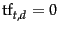 then
In this section we will mention a couple of other smoothing methods, which involve combining observed counts with a more general reference probability distribution. The general approach is that a non-occurring term should be possible in a query, but its probability should be somewhat close to but no more likely than would be expected by chance from the whole collection. That is, if
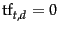 then
| 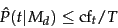 | (101) |
An alternative is to use a language model built from the whole collection as a prior distribution in a Bayesian updating process (rather than a uniform distribution, as we saw in Section 11.3.2 ). We then get the following equation:
| 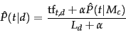 | (103) |
Both of these smoothing methods have been shown to perform well in IR experiments; we will stick with the linear interpolation smoothing method for the rest of this section. While different in detail, they are both conceptually similar: in both cases the probability estimate for a word present in the document combines a discounted MLE and a fraction of the estimate of its prevalence in the whole collection, while for words not present in a document, the estimate is just a fraction of the estimate of the prevalence of the word in the whole collection.
The role of smoothing in LMs for IR is not simply or principally to avoid estimation problems. This was not clear when the models were first proposed, but it is now understood that smoothing is essential to the good properties of the models. The reason for this is explored in Exercise 12.2.3 . The extent of smoothing in these two models is controlled by the  and
and  parameters: a small value of
parameters: a small value of  or a large value of
or a large value of  means more smoothing. This parameter can be tuned to optimize performance using a line search (or, for the linear interpolation model, by other methods, such as the expectation maximimization algorithm; see modelclustering). The value need not be a constant. One approach is to make the value a function of the query size. This is useful because a small amount of smoothing (a ``conjunctive-like'' search) is more suitable for short queries, while a lot of smoothing is more suitable for long queries.
means more smoothing. This parameter can be tuned to optimize performance using a line search (or, for the linear interpolation model, by other methods, such as the expectation maximimization algorithm; see modelclustering). The value need not be a constant. One approach is to make the value a function of the query size. This is useful because a small amount of smoothing (a ``conjunctive-like'' search) is more suitable for short queries, while a lot of smoothing is more suitable for long queries.
To summarize, the retrieval ranking for a query  under the basic LM for IR we have been considering is given by:
under the basic LM for IR we have been considering is given by:
Worked example. Suppose the document collection contains two documents:
Suppose the query is revenue down. Then:
| 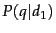 | 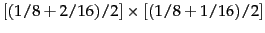 | (105) | |
| 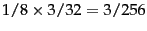 | (106) | ||
| 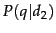 | 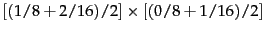 | (107) | |
| (108) |